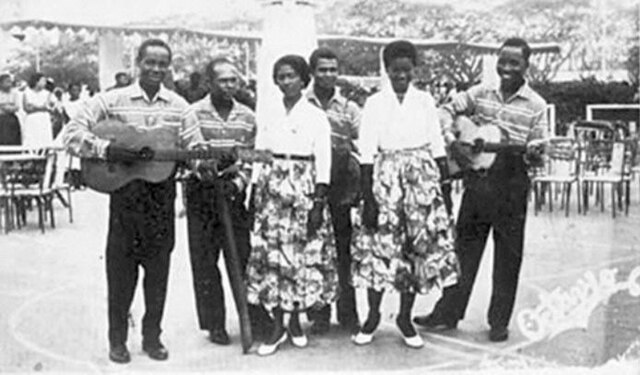

Embark on a journey to uncover one of Africa's best-kept secrets as we shine a light on Angola, a captivating nation among the 55 countries that make up the diverse African continent. Prepare to be dazzled and amazed as we unveil the astonishing wonders that this lesser-known yet truly remarkable country has to offer.
Get to know the heart of Angola through its warm and welcoming people, whose vibrant traditions and pulsating rhythms bring the nation to life.Delve into the country's rich cultural heritage,showcased in colorful markets filled with local crafts and cuisine, and experience the captivating energy of Semba, Angola's national music and dance.
About
This page was created to share my love for Angola, an incredible country in Africa that's often overlooked but holds so much beauty and warmth within its borders.
Join Our Community Website in Washington State
Connect with our community, stay informed about upcoming events, and engage with fellow members. Join us today to build meaningful connections and stay updated on all our activities.
Our vibrant Angolan culture is mainly composed of 3 major ethnic groups Ovimbundu, Mbundu (better called Ambundu, speaking Kimbundu) and the Bakongo, which have unique characteristics in their way of life, There are also small numbers of Mestiço (mixed African and European descent) and ethnic white Europeans as well.
Discover every detail of this wonderful ethnics group
Ovimbundu Tribe
The Ovimbundo people live in west-central Angola,they constituted 37 percent of the population,the language of the Ovimbundu people is Umbundu.
The Mbundu people or also known as Ambundu
people lived mostly in the north of Angola,The language they speake is Kimbundu but currently also Portuguese this
population in 1988 were around 25% of the Angola Population,
They also expanded into the coast formerly occupied by Bakongo and others.
. It is important to mention that the first president of our country was born in this tribe.
The Bakongo people lived primarily alg the Atlantic coast of Central Africa, in Angola they lived mostly in Zaire,Uige, Cabinda and Luanda city, speaking primarily Kikongo, along with other languages like Kituba and Lingala.
our cuisine in its modern shape is a combination of tradicional African ingredients and cooking techniques, and Portuguese influences and ingredients brought over from other Portuguese colonies, such as Brazil
Some popular Angolan dishes are
Funge (Cassava Bread), Kizaca (cassava leaves), Feijao com Arroz( Beans with Rice)
Music
Our wonderful music, full of life, rhythm and culture, from traditional to modern music, motivates the Angolan people, bringing great charm and keeping the Angolan people united.
Semba
Semba is our traditional Angolan music style that predates the our country’s independence from Portuguese colonial rule in 1975, this style is very popular today as it was long before, played at parties, weddings, and in any celebration
Some of the pioneers of Semba music were
Ngola Ritmos, Bonga(Barcelo de Carvalho),and Liceu Vieira Dias.

All of them played a significant role in popularizing Semba music internationally.
Kizomba
A slower, more romantic genre, Kizomba blends Angola rhythms with melodic elements. It’s perfect for intimate moments and social dancing
Kizomba originated during late 1970s to early 1980s. Kizomba is a national heritage of our country and means "party" in Kimbundu
Kuduro and Afrohouse
This genre fuses African rhythms with electronic music, creating an energetic and dynamic sound. Kuduro has gained popularity both locally and internationally
During Angola’s civil unrest, Kuduro provided a means of coping with hardship and fostering positivity for the younger generation. It became a popular form of artistic expression, allowing Angolans, especially those in the slums, to claim their space in the city,
The pioneers of kuduro were Tony Amado, Sebem and Nagrelha
All These genres reflect our rich heritage, syncretism, and the resilience of our people through music